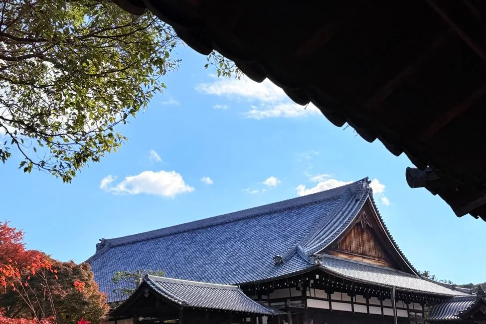

Destinations & itineraries 74
2026.09.10ItineraryThe Best Day Trips from Tokyo (2026): Where to Go & How to Book 2026.07.16City guideOkinawa for First-Timers: Navigating Naha, the Monorail, and Island Roads
2026.07.16City guideOkinawa for First-Timers: Navigating Naha, the Monorail, and Island Roads 2026.07.16City guideThings to Do in Okinawa (2026): Beaches, Memory, and the Slow North
2026.07.16City guideThings to Do in Okinawa (2026): Beaches, Memory, and the Slow North 2026.07.11ItineraryBali: A 7-Day Itinerary
2026.07.11ItineraryBali: A 7-Day Itinerary 2026.07.11ItineraryGetting Started in Bali: A First-Timer's Gentle Guide
2026.07.11ItineraryGetting Started in Bali: A First-Timer's Gentle Guide 2026.07.11ItineraryNavigating Bangkok: A Gentle Introduction for First-Timers
2026.07.11ItineraryNavigating Bangkok: A Gentle Introduction for First-Timers 2026.07.11ItineraryCebu: A First-Timer's Guide
2026.07.11ItineraryCebu: A First-Timer's Guide 2026.07.11ItineraryChiang Mai: A First-Timer's Guide
2026.07.11ItineraryChiang Mai: A First-Timer's Guide 2026.07.11ItineraryHanoi for First-Timers: A Gentle Orientation
2026.07.11ItineraryHanoi for First-Timers: A Gentle Orientation 2026.07.11ItineraryHo Chi Minh City: A First-Timer's Guide to Embracing Saigon's Energy
2026.07.11ItineraryHo Chi Minh City: A First-Timer's Guide to Embracing Saigon's Energy 2026.07.11ItineraryHoi An: A First-Timer's Guide
2026.07.11ItineraryHoi An: A First-Timer's Guide 2026.07.11ItineraryHong Kong: A First-Timer's Guide
2026.07.11ItineraryHong Kong: A First-Timer's Guide 2026.07.11ItineraryJapan: A 7-Day First-Timer's Itinerary
2026.07.11ItineraryJapan: A 7-Day First-Timer's Itinerary 2026.07.11ItineraryKuala Lumpur: A Gentle Introduction for First-Timers
2026.07.11ItineraryKuala Lumpur: A Gentle Introduction for First-Timers 2026.07.11ItineraryManila: A First-Timer's Guide
2026.07.11ItineraryManila: A First-Timer's Guide 2026.07.11ItineraryOsaka: A First-Timer's Guide
2026.07.11ItineraryOsaka: A First-Timer's Guide 2026.07.11ItineraryPenang: A First-Timer's Guide
2026.07.11ItineraryPenang: A First-Timer's Guide 2026.07.11ItineraryPhuket: A First-Timer's Guide
2026.07.11ItineraryPhuket: A First-Timer's Guide 2026.07.11ItinerarySeoul: A First-Timer's Guide
2026.07.11ItinerarySeoul: A First-Timer's Guide 2026.07.11ItineraryA Gentle Introduction to Singapore: Your First Visit
2026.07.11ItineraryA Gentle Introduction to Singapore: Your First Visit 2026.07.11ItineraryThailand: A 10-Day Itinerary
2026.07.11ItineraryThailand: A 10-Day Itinerary 2026.07.11City guideBali: The Places Worth Your Time
2026.07.11City guideBangkok: The Places Worth Your Time
2026.07.11City guideBali: The Places Worth Your Time
2026.07.11City guideBangkok: The Places Worth Your Time 2026.07.11City guideChiang Mai: The Places Worth Your Time
2026.07.11City guideChiang Mai: The Places Worth Your Time 2026.07.11City guideHanoi: The Places Worth Your Time
2026.07.11City guideHanoi: The Places Worth Your Time 2026.07.11City guideHo Chi Minh City: The Places Worth Your Time
2026.07.11City guideHo Chi Minh City: The Places Worth Your Time 2026.07.11City guideHong Kong: The Places Worth Your Time
2026.07.11City guideHong Kong: The Places Worth Your Time 2026.07.11City guideKuala Lumpur: The Places Worth Your Time
2026.07.11City guideKuala Lumpur: The Places Worth Your Time 2026.07.11City guideKyoto: The Places Worth Your Time
2026.07.11City guideKyoto: The Places Worth Your Time 2026.07.11City guideManila: The Places Worth Your Time
2026.07.11City guideOsaka: The Places Worth Your Time
2026.07.11City guideManila: The Places Worth Your Time
2026.07.11City guideOsaka: The Places Worth Your Time 2026.07.11City guidePhuket: The Places Worth Your Time
2026.07.11City guidePhuket: The Places Worth Your Time 2026.07.11City guideSeoul: The Places Worth Your Time
2026.07.11City guideSingapore: The Places Worth Your Time
2026.07.11City guideSeoul: The Places Worth Your Time
2026.07.11City guideSingapore: The Places Worth Your Time 2026.07.11City guideTokyo: The Places Worth Your Time
2026.07.11City guideTokyo: The Places Worth Your Time 2026.07.11ItineraryYogyakarta: A First-Timer's Guide
2026.07.11ItineraryYogyakarta: A First-Timer's Guide 2026.07.10Getting aroundGetting Around Melbourne: Trams, Myki & the Free Tram Zone
2026.07.10Getting aroundGetting Around Melbourne: Trams, Myki & the Free Tram Zone 2026.07.10Getting aroundGetting Around Perth: Transperth, Trains & the Free CAT Buses
2026.07.10Getting aroundGetting Around Perth: Transperth, Trains & the Free CAT Buses 2026.07.10Getting aroundGetting Around Sydney: Opal Card, Trains, Ferries & Buses
2026.07.10Getting aroundGetting Around Sydney: Opal Card, Trains, Ferries & Buses 2026.07.10Getting aroundGetting Around Taiwan: EasyCard, the Taipei MRT & High-Speed Rail
2026.07.10Getting aroundGetting Around Taiwan: EasyCard, the Taipei MRT & High-Speed Rail 2026.07.10ItineraryMelbourne: A First-Timer's Guide
2026.07.10ItineraryMelbourne: A First-Timer's Guide 2026.07.10ItineraryPerth: A First-Timer's Guide
2026.07.10ItineraryPerth: A First-Timer's Guide 2026.07.10ItineraryYour First Visit to Sydney: A Gentle Orientation
2026.07.10ItineraryYour First Visit to Sydney: A Gentle Orientation 2026.07.10ItineraryTaipei: A First-Timer's Guide
2026.07.10ItineraryTaipei: A First-Timer's Guide 2026.07.10City guideMelbourne: The Places Worth Your Time
2026.07.10City guideMelbourne: The Places Worth Your Time 2026.07.10City guidePerth: The Places Worth Your Time
2026.07.10City guidePerth: The Places Worth Your Time 2026.07.10City guideSydney: The Places Worth Your Time
2026.07.10City guideSydney: The Places Worth Your Time 2026.07.10City guideTaipei: The Places Worth Your Time
2026.07.10City guideTaipei: The Places Worth Your Time 2026.07.09ItineraryYour First Day in Tokyo: A Calm Arrival Plan
2026.07.09ItineraryYour First Day in Tokyo: A Calm Arrival Plan 2026.07.09City guideGion, Kyoto: A Neighbourhood Guide
2026.07.09City guideGion, Kyoto: A Neighbourhood Guide 2026.07.09ItineraryHow Much Does a Trip to Japan Cost in 2026?
2026.07.09ItineraryHow Much Does a Trip to Japan Cost in 2026? 2026.07.09Getting aroundNarita & Haneda to Central Tokyo: A Practical Guide to Every Route
2026.07.09Getting aroundNarita & Haneda to Central Tokyo: A Practical Guide to Every Route 2026.07.09ItineraryOsaka or Kyoto: Choosing Your Home Base in Kansai
2026.07.09ItineraryOsaka or Kyoto: Choosing Your Home Base in Kansai 2026.07.09City guideShinjuku, Tokyo: A Neighbourhood Guide
2026.07.09City guideShinjuku, Tokyo: A Neighbourhood Guide 2026.07.09Getting aroundNavigating Japan: A Gentle Guide to Suica, Pasmo, and IC Cards (2026)
2026.07.09Getting aroundNavigating Japan: A Gentle Guide to Suica, Pasmo, and IC Cards (2026) 2026.07.09Getting aroundTokyo to Kyoto: A Practical Guide to Shinkansen, Flight, and Bus Travel
2026.07.09Getting aroundTokyo to Kyoto: A Practical Guide to Shinkansen, Flight, and Bus Travel 2026.07.09ItineraryWhere to Stay in Tokyo: Neighbourhoods Compared
2026.07.09ItineraryWhere to Stay in Tokyo: Neighbourhoods Compared 2026.07.08When to goBest Time to Visit Australia (2026): Region by Region, Honestly
2026.07.08When to goBest Time to Visit Australia (2026): Region by Region, Honestly 2026.07.08When to goBest Time to Visit Japan (2026): A Season-Honest Guide
2026.07.08When to goBest Time to Visit Vietnam (2026): Region by Region, Honestly
2026.07.08When to goBest Time to Visit Japan (2026): A Season-Honest Guide
2026.07.08When to goBest Time to Visit Vietnam (2026): Region by Region, Honestly 2026.07.08When to goKyoto in Autumn 2026: Where the Colors Peak, and When
2026.07.08When to goKyoto in Autumn 2026: Where the Colors Peak, and When 2026.07.08ItineraryOsaka in 3 Days: Food, Neighborhoods, and Day-One Energy
2026.07.08ItineraryOsaka in 3 Days: Food, Neighborhoods, and Day-One Energy 2026.07.08ItinerarySeoul in 3 Days: A First-Timer's Unhurried Itinerary
2026.07.08ItinerarySeoul in 3 Days: A First-Timer's Unhurried Itinerary 2026.07.08ItineraryTokyo in 5 Days: A First-Timer's Unhurried Itinerary
2026.07.08ItineraryTokyo in 5 Days: A First-Timer's Unhurried Itinerary 2026.07.07When to goJapan in Autumn 2026: Foliage Timing, Crowds, and How to Plan
2026.07.07When to goJapan in Autumn 2026: Foliage Timing, Crowds, and How to Plan 2026.07.02City guideThree Slow Days in Kyoto: A Gentle First-Timer's Itinerary
2026.07.02City guideThree Slow Days in Kyoto: A Gentle First-Timer's Itinerary 2026.06.29Getting aroundNavigating Luggage Storage in Tokyo: Options and Practicalities for 2026
2026.06.29Getting aroundNavigating Luggage Storage in Tokyo: Options and Practicalities for 2026 2026.06.20Country profileSouth Korea: A Layered Profile for Thoughtful Travelers
2026.06.20Country profileSouth Korea: A Layered Profile for Thoughtful Travelers 2026.06.13Country profileJapan
2026.06.13Country profileJapan 2026.06.13Country profileVietnam
2026.06.13Country profileVietnam 2026.06.13Country profileAustralia
2026.06.13Country profileAustralia 2026.06.12City guideTokyo
2026.06.12City guideTokyo 2026.06.12City guideAsakusa, Tokyo
2026.06.12City guideAsakusa, Tokyo

2026.07.18Getting aroundMelbourne Airport to the City: SkyBus, Rideshare, or the Budget Way
2026.07.16City guideOkinawa for First-Timers: Navigating Naha, the Monorail, and Island Roads
2026.07.16City guideThings to Do in Okinawa (2026): Beaches, Memory, and the Slow North
2026.07.11ItineraryBali: A 7-Day Itinerary
2026.07.11ItineraryGetting Started in Bali: A First-Timer's Gentle Guide
2026.07.11ItineraryNavigating Bangkok: A Gentle Introduction for First-Timers
2026.07.11ItineraryCebu: A First-Timer's Guide
2026.07.11ItineraryChiang Mai: A First-Timer's Guide
2026.07.11ItineraryHanoi for First-Timers: A Gentle Orientation
2026.07.11ItineraryHo Chi Minh City: A First-Timer's Guide to Embracing Saigon's Energy
2026.07.11ItineraryHoi An: A First-Timer's Guide
2026.07.11ItineraryHong Kong: A First-Timer's Guide
2026.07.11ItineraryJapan: A 7-Day First-Timer's Itinerary
2026.07.11ItineraryKuala Lumpur: A Gentle Introduction for First-Timers
2026.07.11ItineraryManila: A First-Timer's Guide
2026.07.11ItineraryOsaka: A First-Timer's Guide
2026.07.11ItineraryPenang: A First-Timer's Guide
2026.07.11ItineraryPhuket: A First-Timer's Guide
2026.07.11ItinerarySeoul: A First-Timer's Guide
2026.07.11ItineraryA Gentle Introduction to Singapore: Your First Visit
2026.07.11ItineraryThailand: A 10-Day Itinerary
2026.07.11City guideBali: The Places Worth Your Time
2026.07.11City guideBangkok: The Places Worth Your Time
2026.07.11City guideChiang Mai: The Places Worth Your Time
2026.07.11City guideHanoi: The Places Worth Your Time
2026.07.11City guideHo Chi Minh City: The Places Worth Your Time
2026.07.11City guideHong Kong: The Places Worth Your Time
2026.07.11City guideKuala Lumpur: The Places Worth Your Time
2026.07.11City guideKyoto: The Places Worth Your Time
2026.07.11City guideManila: The Places Worth Your Time
2026.07.11City guideOsaka: The Places Worth Your Time
2026.07.11City guidePhuket: The Places Worth Your Time
2026.07.11City guideSeoul: The Places Worth Your Time
2026.07.11City guideSingapore: The Places Worth Your Time
2026.07.11City guideTokyo: The Places Worth Your Time
2026.07.11ItineraryYogyakarta: A First-Timer's Guide
2026.07.10Getting aroundGetting Around Melbourne: Trams, Myki & the Free Tram Zone
2026.07.10Getting aroundGetting Around Perth: Transperth, Trains & the Free CAT Buses
2026.07.10Getting aroundGetting Around Sydney: Opal Card, Trains, Ferries & Buses
2026.07.10Getting aroundGetting Around Taiwan: EasyCard, the Taipei MRT & High-Speed Rail
2026.07.10ItineraryMelbourne: A First-Timer's Guide
2026.07.10ItineraryPerth: A First-Timer's Guide
2026.07.10ItineraryYour First Visit to Sydney: A Gentle Orientation
2026.07.10ItineraryTaipei: A First-Timer's Guide
2026.07.10City guideMelbourne: The Places Worth Your Time
2026.07.10City guidePerth: The Places Worth Your Time
2026.07.10City guideSydney: The Places Worth Your Time
2026.07.10City guideTaipei: The Places Worth Your Time
2026.07.09ItineraryYour First Day in Tokyo: A Calm Arrival Plan
2026.07.09City guideGion, Kyoto: A Neighbourhood Guide
2026.07.09ItineraryHow Much Does a Trip to Japan Cost in 2026?
2026.07.09Getting aroundNarita & Haneda to Central Tokyo: A Practical Guide to Every Route
2026.07.09ItineraryOsaka or Kyoto: Choosing Your Home Base in Kansai
2026.07.09City guideShinjuku, Tokyo: A Neighbourhood Guide
2026.07.09Getting aroundNavigating Japan: A Gentle Guide to Suica, Pasmo, and IC Cards (2026)
2026.07.09Getting aroundTokyo to Kyoto: A Practical Guide to Shinkansen, Flight, and Bus Travel
2026.07.09ItineraryWhere to Stay in Tokyo: Neighbourhoods Compared
2026.07.08When to goBest Time to Visit Australia (2026): Region by Region, Honestly
2026.07.08When to goBest Time to Visit Japan (2026): A Season-Honest Guide
2026.07.08When to goBest Time to Visit Vietnam (2026): Region by Region, Honestly
2026.07.08When to goKyoto in Autumn 2026: Where the Colors Peak, and When
2026.07.08ItineraryOsaka in 3 Days: Food, Neighborhoods, and Day-One Energy
2026.07.08ItinerarySeoul in 3 Days: A First-Timer's Unhurried Itinerary
2026.07.08ItineraryTokyo in 5 Days: A First-Timer's Unhurried Itinerary
2026.07.07When to goJapan in Autumn 2026: Foliage Timing, Crowds, and How to Plan
2026.07.02City guideThree Slow Days in Kyoto: A Gentle First-Timer's Itinerary
2026.06.29Getting aroundNavigating Luggage Storage in Tokyo: Options and Practicalities for 2026
2026.06.20Country profileSouth Korea: A Layered Profile for Thoughtful Travelers
2026.06.13Country profileJapan
2026.06.13Country profileVietnam
2026.06.13Country profileAustralia
2026.06.12City guideTokyo
2026.06.12City guideAsakusa, Tokyo
Booking, rail & flights 22
2026.09.23Booking & toursWhere to Book a Halong Bay Cruise: Klook, Viator, or Direct? 2026.09.23Booking & toursWhere to Book a Mount Fuji Day Tour: Klook, KKday or Viator?
2026.09.23Booking & toursWhere to Book a Mount Fuji Day Tour: Klook, KKday or Viator? 2026.09.23Booking & toursWhere to Book a Seoul DMZ Tour: Klook, KKday or Viator?
2026.09.23Booking & toursWhere to Book a Seoul DMZ Tour: Klook, KKday or Viator? 2026.09.13Booking & toursBangkok Dinner Cruises: How to Choose From 28 Boats on the Chao Phraya
2026.09.13RailEurope Rail Passes in 2026: What Just Changed, and When a Pass Actually Wins
2026.09.13Booking & toursBangkok Dinner Cruises: How to Choose From 28 Boats on the Chao Phraya
2026.09.13RailEurope Rail Passes in 2026: What Just Changed, and When a Pass Actually Wins 2026.09.13Booking & toursHalong Bay Cruises From Hanoi: Day Trip or Overnight, Honestly
2026.09.13Booking & toursHalong Bay Cruises From Hanoi: Day Trip or Overnight, Honestly 2026.09.13Booking & toursHong Kong Harbour Cruises: What's Worth Paying For on Victoria Harbour
2026.09.13Flights & hotelsBooking International Flights: Seven Things the Price Doesn't Tell You
2026.09.13Booking & toursHong Kong Harbour Cruises: What's Worth Paying For on Victoria Harbour
2026.09.13Flights & hotelsBooking International Flights: Seven Things the Price Doesn't Tell You 2026.09.13RailIs the KORAIL Pass Worth It in 2026? The Honest Arithmetic
2026.09.13RailIs the KORAIL Pass Worth It in 2026? The Honest Arithmetic 2026.09.13Booking & toursSydney Harbour Cruises: Which One Is Actually Worth Booking
2026.09.13Booking & toursSydney Harbour Cruises: Which One Is Actually Worth Booking 2026.09.13RailTaiwan High Speed Rail: Pass, Early Bird, or the Tourist Discount?
2026.09.13RailTaiwan High Speed Rail: Pass, Early Bird, or the Tourist Discount? 2026.09.13Booking & toursWhere to Book a Bangkok Dinner Cruise: Klook, KKday or Viator?
2026.09.13Booking & toursWhere to Book a Jeju Bus Tour: Klook, KKday, or Somewhere Else?
2026.09.13Booking & toursWhere to Book a Bangkok Dinner Cruise: Klook, KKday or Viator?
2026.09.13Booking & toursWhere to Book a Jeju Bus Tour: Klook, KKday, or Somewhere Else? 2026.09.13Booking & toursWhere to Book a Sydney Harbour Cruise: Klook, Viator or GetYourGuide?
2026.09.13Booking & toursWhere to Book a Taipei Day Tour: KKday or Klook?
2026.07.15Booking & toursKlook vs KKday (2026): Which Booking Platform for Asia?
2026.09.13Booking & toursWhere to Book a Sydney Harbour Cruise: Klook, Viator or GetYourGuide?
2026.09.13Booking & toursWhere to Book a Taipei Day Tour: KKday or Klook?
2026.07.15Booking & toursKlook vs KKday (2026): Which Booking Platform for Asia? 2026.07.09Booking & toursAre Japan's City Sightseeing Passes Worth It? A Practical Guide
2026.07.09Booking & toursAre Japan's City Sightseeing Passes Worth It? A Practical Guide 2026.07.08RailIs the JR Pass Worth It in 2026? An Honest Calculation
2026.07.08RailIs the JR Pass Worth It in 2026? An Honest Calculation 2026.07.07Booking & toursJapan Tickets That Sell Out: What to Book Before You Fly (2026)
2026.06.28Booking & toursKlook vs Viator vs GetYourGuide (2026): Which Is Cheaper, and Which Has More?
2026.07.07Booking & toursJapan Tickets That Sell Out: What to Book Before You Fly (2026)
2026.06.28Booking & toursKlook vs Viator vs GetYourGuide (2026): Which Is Cheaper, and Which Has More? 2026.06.16Booking & toursRent a Boat for a Day Without a License: A Traveller's Guide
2026.06.16Booking & toursRent a Boat for a Day Without a License: A Traveller's Guide 2026.06.11Flights & hotelsHotel Booking Sites Compared
2026.06.11Flights & hotelsHotel Booking Sites Compared
2026.09.23Booking & toursWhere to Book a Mount Fuji Day Tour: Klook, KKday or Viator?
2026.09.23Booking & toursWhere to Book a Seoul DMZ Tour: Klook, KKday or Viator?
2026.09.13Booking & toursBangkok Dinner Cruises: How to Choose From 28 Boats on the Chao Phraya
2026.09.13RailEurope Rail Passes in 2026: What Just Changed, and When a Pass Actually Wins
2026.09.13Booking & toursHalong Bay Cruises From Hanoi: Day Trip or Overnight, Honestly
2026.09.13Booking & toursHong Kong Harbour Cruises: What's Worth Paying For on Victoria Harbour
2026.09.13Flights & hotelsBooking International Flights: Seven Things the Price Doesn't Tell You
2026.09.13RailIs the KORAIL Pass Worth It in 2026? The Honest Arithmetic
2026.09.13Booking & toursSydney Harbour Cruises: Which One Is Actually Worth Booking
2026.09.13RailTaiwan High Speed Rail: Pass, Early Bird, or the Tourist Discount?
2026.09.13Booking & toursWhere to Book a Bangkok Dinner Cruise: Klook, KKday or Viator?
2026.09.13Booking & toursWhere to Book a Jeju Bus Tour: Klook, KKday, or Somewhere Else?
2026.09.13Booking & toursWhere to Book a Sydney Harbour Cruise: Klook, Viator or GetYourGuide?
2026.09.13Booking & toursWhere to Book a Taipei Day Tour: KKday or Klook?
2026.07.15Booking & toursKlook vs KKday (2026): Which Booking Platform for Asia?
2026.07.09Booking & toursAre Japan's City Sightseeing Passes Worth It? A Practical Guide
2026.07.08RailIs the JR Pass Worth It in 2026? An Honest Calculation
2026.07.07Booking & toursJapan Tickets That Sell Out: What to Book Before You Fly (2026)
2026.06.28Booking & toursKlook vs Viator vs GetYourGuide (2026): Which Is Cheaper, and Which Has More?
2026.06.16Booking & toursRent a Boat for a Day Without a License: A Traveller's Guide
2026.06.11Flights & hotelsHotel Booking Sites Compared
Connectivity 17
2026.09.13ConnectivityDo "Unlimited" Travel eSIMs Really Give You Unlimited Data?
2026.09.06ConnectivityStaying Connected in South Korea: eSIM, Local SIM, or Pocket WiFi? 2026.09.06ConnectivityWhen Should You Activate Your Travel eSIM? Before You Fly or When You Land
2026.09.06ConnectivityWhen Should You Activate Your Travel eSIM? Before You Fly or When You Land 2026.08.24ConnectivityeSIM vs Physical SIM Card for Travel (2026): Which Should You Buy?
2026.08.24ConnectivityeSIM vs Physical SIM Card for Travel (2026): Which Should You Buy? 2026.07.18ConnectivityBest eSIM for Australia (2026): The Honest Pick for Your Trip
2026.07.18ConnectivityBest eSIM for Australia (2026): The Honest Pick for Your Trip 2026.07.15ConnectivityBest eSIM for Taiwan (2026): A Practical Guide to Staying Connected
2026.07.15ConnectivityBest eSIM for Taiwan (2026): A Practical Guide to Staying Connected 2026.07.15ConnectivityAn Honest Look at eSIMs for Vietnam (2026): Practical Picks and Real Data Needs
2026.07.15ConnectivityAn Honest Look at eSIMs for Vietnam (2026): Practical Picks and Real Data Needs 2026.07.08ConnectivityBest eSIM for South Korea (2026): How I'd Choose
2026.07.08ConnectivityBest eSIM for South Korea (2026): How I'd Choose 2026.07.07ConnectivityBest eSIM for the USA (2026): How I'd Choose
2026.07.07ConnectivityBest eSIM for the USA (2026): How I'd Choose 2026.07.07ConnectivityBest Travel eSIM 2026: Ranked, Honestly
2026.07.07ConnectivityBest Travel eSIM 2026: Ranked, Honestly 2026.07.04ConnectivityBest eSIM for Japan (2026): Airalo vs Saily Compared
2026.07.04ConnectivityBest eSIM for Japan (2026): Airalo vs Saily Compared 2026.07.01ConnectivityChoosing Your Europe eSIM for 2026: An In-Depth Guide
2026.07.01ConnectivityChoosing Your Europe eSIM for 2026: An In-Depth Guide 2026.07.01ConnectivityBest eSIM for Thailand (2026): A Practical Guide
2026.07.01ConnectivityBest eSIM for Thailand (2026): A Practical Guide 2026.06.28ConnectivityAiralo vs. Holafly vs. Saily: Navigating Travel eSIM Options in 2026
2026.06.28ConnectivityAiralo vs. Holafly vs. Saily: Navigating Travel eSIM Options in 2026 2026.06.28ConnectivityBest eSIM for Japan, South Korea & Vietnam (2026)
2026.06.28ConnectivityBest eSIM for Japan, South Korea & Vietnam (2026) 2026.06.28ConnectivityPocket WiFi vs eSIM: Navigating International Connectivity in 2026
2026.06.28ConnectivityPocket WiFi vs eSIM: Navigating International Connectivity in 2026 2026.05.28ConnectivityeSIM Setup for International Travel
2026.05.28ConnectivityeSIM Setup for International Travel
2026.09.06ConnectivityWhen Should You Activate Your Travel eSIM? Before You Fly or When You Land
2026.08.24ConnectivityeSIM vs Physical SIM Card for Travel (2026): Which Should You Buy?
2026.07.18ConnectivityBest eSIM for Australia (2026): The Honest Pick for Your Trip
2026.07.15ConnectivityBest eSIM for Taiwan (2026): A Practical Guide to Staying Connected
2026.07.15ConnectivityAn Honest Look at eSIMs for Vietnam (2026): Practical Picks and Real Data Needs
2026.07.08ConnectivityBest eSIM for South Korea (2026): How I'd Choose
2026.07.07ConnectivityBest eSIM for the USA (2026): How I'd Choose
2026.07.07ConnectivityBest Travel eSIM 2026: Ranked, Honestly
2026.07.04ConnectivityBest eSIM for Japan (2026): Airalo vs Saily Compared
2026.07.01ConnectivityChoosing Your Europe eSIM for 2026: An In-Depth Guide
2026.07.01ConnectivityBest eSIM for Thailand (2026): A Practical Guide
2026.06.28ConnectivityAiralo vs. Holafly vs. Saily: Navigating Travel eSIM Options in 2026
2026.06.28ConnectivityBest eSIM for Japan, South Korea & Vietnam (2026)
2026.06.28ConnectivityPocket WiFi vs eSIM: Navigating International Connectivity in 2026
2026.05.28ConnectivityeSIM Setup for International Travel
Insurance 9
2026.09.11InsuranceIs Travel Insurance a Rip-Off? What the Economics Actually Says 2026.09.06InsuranceTravel Insurance for South Korea (2026): A Practical Guide
2026.09.06InsuranceTravel Insurance for South Korea (2026): A Practical Guide 2026.07.18InsuranceTravel Insurance for Australia (2026): What Actually Matters
2026.07.18InsuranceTravel Insurance for Australia (2026): What Actually Matters 2026.07.07InsuranceBest Travel Insurance 2026: Ranked by Traveler Type
2026.07.07InsuranceBest Travel Insurance 2026: Ranked by Traveler Type 2026.07.07InsuranceIs Travel Insurance Actually Worth It? An Honest Look
2026.07.07InsuranceIs Travel Insurance Actually Worth It? An Honest Look 2026.07.07InsuranceTravel Insurance for Japan (2026): Do You Actually Need It?
2026.06.28InsuranceNavigating Travel Insurance for Digital Nomads in 2026: A Comprehensive Buyer's Guide
2026.07.07InsuranceTravel Insurance for Japan (2026): Do You Actually Need It?
2026.06.28InsuranceNavigating Travel Insurance for Digital Nomads in 2026: A Comprehensive Buyer's Guide 2026.06.28InsuranceSafetyWing vs. World Nomads: Navigating Travel Insurance in 2026
2026.06.28InsuranceSafetyWing vs. World Nomads: Navigating Travel Insurance in 2026 2026.06.20InsuranceTravel Insurance Compared: SafetyWing, World Nomads, and Genki
2026.06.20InsuranceTravel Insurance Compared: SafetyWing, World Nomads, and Genki
2026.09.06InsuranceTravel Insurance for South Korea (2026): A Practical Guide
2026.07.18InsuranceTravel Insurance for Australia (2026): What Actually Matters
2026.07.07InsuranceBest Travel Insurance 2026: Ranked by Traveler Type
2026.07.07InsuranceIs Travel Insurance Actually Worth It? An Honest Look
2026.07.07InsuranceTravel Insurance for Japan (2026): Do You Actually Need It?
2026.06.28InsuranceNavigating Travel Insurance for Digital Nomads in 2026: A Comprehensive Buyer's Guide
2026.06.28InsuranceSafetyWing vs. World Nomads: Navigating Travel Insurance in 2026
2026.06.20InsuranceTravel Insurance Compared: SafetyWing, World Nomads, and Genki
Packing, gear & airports 14
2026.07.16PackingWhat to Pack for Okinawa (2026): Embracing Beach, Humidity, and Typhoon Season 2026.07.15GearChoosing a Power Bank for Travel (2026): Understanding Airline Rules and Practical Picks
2026.07.15GearChoosing a Power Bank for Travel (2026): Understanding Airline Rules and Practical Picks 2026.07.15GearGently Navigating Asia's Power: A Guide to the Best Travel Adapter for Your Trip (2026)
2026.07.15GearGently Navigating Asia's Power: A Guide to the Best Travel Adapter for Your Trip (2026) 2026.07.15AirportPre-Flight Checklist for Passengers: 25 Steps Before You Fly
2026.07.15AirportPre-Flight Checklist for Passengers: 25 Steps Before You Fly 2026.07.11PackingWhat to Pack for Japan
2026.07.11PackingWhat to Pack for Japan 2026.07.11PackingWhat to Pack for Southeast Asia
2026.07.11PackingWhat to Pack for Southeast Asia 2026.06.29PackingCarry-On Packing List for 10 Days in Japan (2026)
2026.06.29PackingCarry-On Packing List for 10 Days in Japan (2026) 2026.06.28AirportAirport Security and Pre-Flight Checklist: 12 Checks Before You Fly (2026)
2026.06.26PackingAirport Security Bag Rules (2026): Carry-On and Personal Item Sizes
2026.06.28AirportAirport Security and Pre-Flight Checklist: 12 Checks Before You Fly (2026)
2026.06.26PackingAirport Security Bag Rules (2026): Carry-On and Personal Item Sizes 2026.06.20PackingThe Two-Week Capsule Wardrobe: 10 Items for Three Climates
2026.06.08PackingBeach Trip Packing Checklist
2026.06.20PackingThe Two-Week Capsule Wardrobe: 10 Items for Three Climates
2026.06.08PackingBeach Trip Packing Checklist 2026.05.28PackingCarry-On Packing for Airport Security
2026.05.28PackingCarry-On Packing for Airport Security 2026.05.28PackingTravel EDC Checklist: Everyday Carry for Trip Days
2026.05.28PackingTravel EDC Checklist: Everyday Carry for Trip Days 2026.05.26PackingAirport Liquid Rules for Carry-Ons: Limits and Checklist
2026.05.26PackingAirport Liquid Rules for Carry-Ons: Limits and Checklist
2026.07.15GearChoosing a Power Bank for Travel (2026): Understanding Airline Rules and Practical Picks
2026.07.15GearGently Navigating Asia's Power: A Guide to the Best Travel Adapter for Your Trip (2026)
2026.07.15AirportPre-Flight Checklist for Passengers: 25 Steps Before You Fly
2026.07.11PackingWhat to Pack for Japan
2026.07.11PackingWhat to Pack for Southeast Asia
2026.06.29PackingCarry-On Packing List for 10 Days in Japan (2026)
2026.06.28AirportAirport Security and Pre-Flight Checklist: 12 Checks Before You Fly (2026)
2026.06.26PackingAirport Security Bag Rules (2026): Carry-On and Personal Item Sizes
2026.06.20PackingThe Two-Week Capsule Wardrobe: 10 Items for Three Climates
2026.06.08PackingBeach Trip Packing Checklist
2026.05.28PackingCarry-On Packing for Airport Security
2026.05.28PackingTravel EDC Checklist: Everyday Carry for Trip Days
2026.05.26PackingAirport Liquid Rules for Carry-Ons: Limits and Checklist
Entry, money & rules 10
2026.09.13Money & costsHow to Save Money on International Travel: 7 Levers That Actually Move the Number
2026.09.11Money & costsDoes a Tourist Tax Actually Reduce Overtourism?
2026.09.11Money & costsIs Japan's Accommodation Tax Double Taxation? The Honest Answer
2026.09.11Money & costsIs the Weak Yen Really a Bargain for Travellers — or a Trap?
2026.09.11Money & costsJapan's Tourist Taxes in 2026: Kyoto's Hotel-Tax Rise & What to Budget
2026.09.09Entry & arrivalDo You Need a K-ETA for South Korea? (2026 Update)
2026.09.09Money & costsJapan Tax-Free Shopping Changes 1 Nov 2026: What Tourists Need to Know
2026.09.06Money & costsHow Much Does a Trip to South Korea Cost? Your 2026 Budget Guide 2026.08.27Entry & arrivalVisit Japan Web: How to Register Before You Fly (2026)
2026.07.15Money & costsHow Much Cash Do You Need in Japan? A Guide for 2026
2026.08.27Entry & arrivalVisit Japan Web: How to Register Before You Fly (2026)
2026.07.15Money & costsHow Much Cash Do You Need in Japan? A Guide for 2026
2026.09.11Money & costsDoes a Tourist Tax Actually Reduce Overtourism?
2026.09.11Money & costsIs Japan's Accommodation Tax Double Taxation? The Honest Answer
2026.09.11Money & costsIs the Weak Yen Really a Bargain for Travellers — or a Trap?
2026.09.11Money & costsJapan's Tourist Taxes in 2026: Kyoto's Hotel-Tax Rise & What to Budget
2026.09.09Entry & arrivalDo You Need a K-ETA for South Korea? (2026 Update)
2026.09.09Money & costsJapan Tax-Free Shopping Changes 1 Nov 2026: What Tourists Need to Know
2026.09.06Money & costsHow Much Does a Trip to South Korea Cost? Your 2026 Budget Guide
2026.08.27Entry & arrivalVisit Japan Web: How to Register Before You Fly (2026)
2026.07.15Money & costsHow Much Cash Do You Need in Japan? A Guide for 2026
Culture & trip planning 4
2026.07.08Trip planningYour First International Trip: A Calm Pre-Flight Checklist 2026.07.08Trip planningJet Lag, Honestly: What Helps, What's Myth
2026.07.08Trip planningJet Lag, Honestly: What Helps, What's Myth 2026.06.15CultureUntranslatable Words: 14 Concepts in 12 Languages and Why They Resist Translation
2026.06.15CultureUntranslatable Words: 14 Concepts in 12 Languages and Why They Resist Translation 2026.06.15CultureWhat Counts as Rude: A Research Guide to Cultural Etiquette in 12 Countries
2026.06.15CultureWhat Counts as Rude: A Research Guide to Cultural Etiquette in 12 Countries
2026.07.08Trip planningJet Lag, Honestly: What Helps, What's Myth
2026.06.15CultureUntranslatable Words: 14 Concepts in 12 Languages and Why They Resist Translation
2026.06.15CultureWhat Counts as Rude: A Research Guide to Cultural Etiquette in 12 Countries